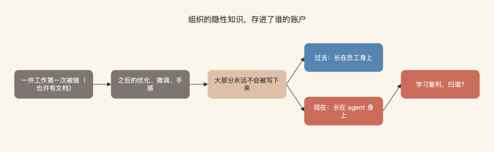
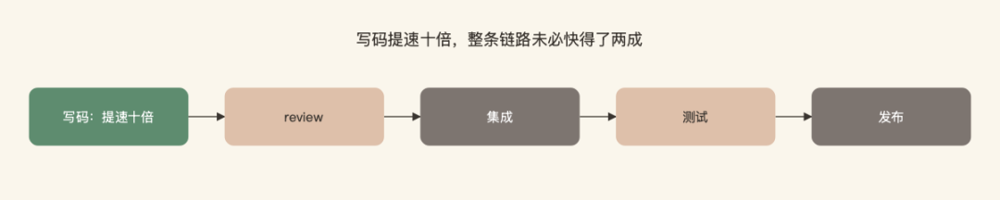
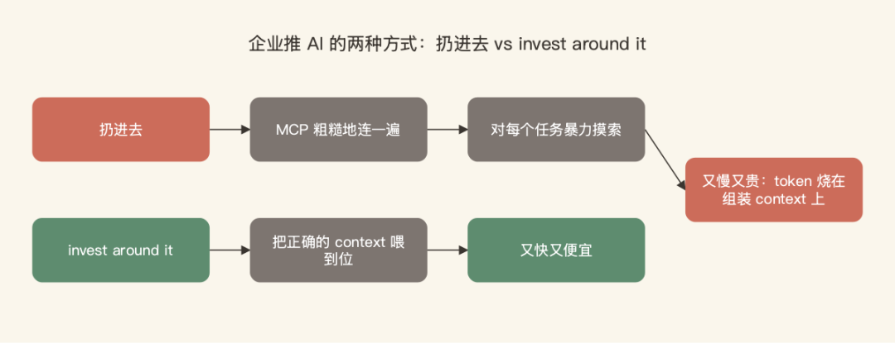
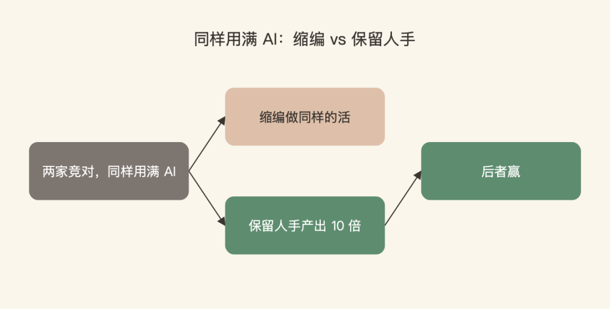

一个每月烧 100 万美元的 agent，接住了原来 15 个人轮值的 on-call 分诊，自动处理 95% 的生产环境问题——但 CEO 自己在节目里说，这笔账到底比人便宜还是贵，存疑。
说这话的不是 AI 怀疑论者。Arvind Jain，Rubrik 联合创始人（已上市）、Glean 创始人兼 CEO，一个公司代码几乎 100% 由 AI 写的人。7 月 11 日发布的这期 20VC 访谈里，他和主持人 Harry Stebbings 全程互相 pushback，火药味比常规访谈重，也好看得多。
听完 60 分钟，我记下四条逆共识判断，每一条都跟当下的主流叙事拧着：企业该怕的不是数据泄露；开源对闭源不是真问题；写码提速没有换来交付提速；以及，AI 到底该不该和人力放进同一张成本表。
先提醒一句立场：Glean 卖的就是企业 context 平台，他的不少论点和自家生意同向。哪些是原话、哪些是他的推销、哪些是主持人的说法，我在文中都做了区分，你带着滤镜读。
一、企业真正该怕的，不是数据给了谁，是活儿归谁干
Harry 开场丢了个引子：Palantir 的 Alex Karp 前几天上 CNBC 说，全球最大的那批企业，对前沿模型厂商的怀疑达到了历史最高点。Arvind 的回答归纳起来是：怕是真怕，但大家把怕的东西说错了。
他的推演是这样的：如果企业里大多数工作，未来由某家前沿实验室全权驱动的 agent 完成，那企业交出去的就不只是技术选型，而是运营本身。一件工作第一次被做的时候也许有文档，但之后的优化、微调、手感，大部分永远不会被写下来。公司里最值钱的那部分知识，从来不在文档里，在人的默会知识里——五月初我在《默会知识：AI 替代不了的护城河》里专门写过，当时把它当成个人的护城河来讲。Arvind 把同一个判断往前推了一步：这些东西过去长在员工身上，现在开始长在 agent 身上。

"All of that institutional learning is actually going to accumulate in that agent that is doing that work."
所有这些组织内部沉淀的经验学习，最终都会积累在那个真正在干这份活的 agent 身上。
至于"我的数据会不会被拿去训练"，他说这层恐惧已经基本被合同条款化解了。悬而未决的是另一个问题：agent 干活攒下的学习复利，归谁？你不掌控 agent 的运行，就等于把组织的隐性知识连本带息存进了别人的账户。
这就像招了一个永远不会离职的老员工，但他的劳动合同签在别人公司。我们自己评估 agent 供应商时，现在也会多问一句：哪天要换掉它，沉淀在里面的流程知识能不能跟着走？这个框架比"数据安全"深一层，值得列进选型评估表。
二、开源拐点已到，真正的分界线是敢不敢用中国模型
访谈里最有新闻性的数字是这个：90% 甚至更高比例的企业用例，现在已经可以被许多不同的模型完整处理，包括开源模型。Glean 给客户的核心卖点之一就是模型路由——按任务挑模型，客户接受开源就路由到开源，替客户控制成本。
拐点落在现在，他给的理由全是成本：企业的 AI 年度预算经常一两个月就烧穿，CFO 坐不住了，而开源价格便宜一个数量级。他还点名了一个时间点：GLM 5.2（智谱 6 月开源的那个 agentic 编码模型，公开 benchmark 已逼近 Opus 4.8、价格约五分之一）出来之后，Glean 自己的团队第一次觉得，大多数 workload 可以放心跑在开源模型上。"开源把差距追进三个月"这件事，就发生在最近一个月。
然后他把问题推到真正的分界线上：
"The question is going to be: are they okay with the Chinese model or not. That's the only question here. It's not open source versus closed source."
问题将会是：他们能不能接受中国模型。这是这里唯一的问题。这不是开源对闭源之争。
Harry 当场反问：这在技术上根本站不住——模型可以跑在完全受控的环境里，什么都不会传回中国。Arvind 没反驳这个前提，他把剩下的顾虑归为两层：心理安全感（万一有我们不理解的后门呢）和竞争观感（被对手拿去说事）。他的判断：最终取决于谁敢先动，先动的人把它变成常态。Harry 补了个背景：OpenRouter 用量榜前六名全是中国模型，Anthropic 排第七。
这条对国内团队反而是好消息：我们用国产模型没有那层心理负担，而"按任务路由、成本-质量分档"的打法，跟 Glean 给全球大企业开的方子是同一套。他还给了个时间表：三年内，大多数企业 workload 会跑在开源模型上。
三、写码快了，shipping 没快：ROI 卡在 context，不卡在模型
聊到企业 AI 到底有没有回报，Arvind 给了个分层的答案。客服是能算清的：一个客服原来一天处理 10 单，现在 12 单，清清楚楚。但占 AI 支出大头的 coding，账就没这么好算了。
Glean 自己的代码几乎 100% 由 AI 写——用他的话说，没人再手写初稿了。但他们仍然强制人工 code review。公司内部有人提议干脆取消 review，理由你肯定熟：瓶颈已经从写码的人转移到看码的人。他否了：AI 能一口气写出百万行，但维护和理解这些代码的难度还在那里，他宁愿付 review 的成本。
更扎心的是行业面上的观察：
"The actual shipping speed of products has not increased, even though coding speed increased significantly."
产品实际的交付速度并没有提升，尽管写码速度已经显著提升了。
Harry 追问 Glean 自己的交付速度。他承认确实变快了，但马上补了一句：团队也更大、更资深了，归因拆不干净。
这跟我之前写《Sierra 全员 AI 化 4 个月：70% 的 PR 已经由 agent 开出》那篇并不矛盾——PR 吞吐和产品交付是两个口径，中间隔着 review、集成、测试、发布一整条链路。写码只是 shipping 的一小段，一段提速十倍，整条链路未必快得了两成。我们自己的体感也一样：agent 开 PR 的速度起来之后，压力全堆到了 review 和验证上。

至于 ROI 到底卡在哪，他的诊断是吞吐量，具体说是 context 的吞吐量。大多数企业推 AI 的方式是"扔进去"：拿 MCP 把模型和所有内部系统粗糙地连一遍，然后让模型对每个任务暴力摸索，自己拼凑完成任务需要的原材料。这种模式下 AI 又慢又贵：

"Most of the tokens are being burnt just trying to assemble the right context for that given task."
大多数 token 被烧掉，只是为了给眼前这个任务组装正确的 context。
解法他叫 invest around it：在 AI 周围做投资，把正确的 context 喂到位，让它跑得又快又便宜。这一段要开着立场滤镜听——把 context 层做成产品卖给你，正是 Glean 的生意。但生意归生意，"token 烧在组装 context 上"这个诊断，跟我们在一线看到的对得上：agent 跑一个任务，翻库、找文档、试接口的开销，常常比落到任务本身的开销还大。
这其实是他一贯的效率论。上个月他刚在 X 上写过一篇讲 token yield（token 产出率）的长帖：别盯着裸 token 用量，对的问题是每消耗一个 token 换回了多少有用产出，而产出率是被模型外围的架构决定的——检索准不准、模型分不分档路由、执行经验有没有复用。他给过一个数字：检索质量差的方案做对同一件事，要多花近一倍的 token，用更多工具调用和推理循环去补偿。放回 ROI 这个话题，效率的分子是交付，分母是 token。企业现在的普遍状态是分母疯涨、分子没动，而 context 恰好同时压着两头。
四、一个月 100 万美元的 agent，把两种成本放进了同一个句子
回到开头那个 agent。15 人的 on-call 团队，原来的工作是分诊每一个生产问题：系统告警、异常、出错。Glean 做了个 triage agent，接住了其中 95%。听起来是教科书级的自动化案例——直到 Arvind 报出成本：一个月 100 万美元。Harry 当场愣住："你们是在买 Cristiano Ronaldo 吗？"
有意思的是两人接下来的分歧。Harry 站"还是便宜"：他说 Marc Benioff 在 Anthropic 上花 3 亿美元，也只占开发者薪资的 3.7%，开发工具的定价被严重低估了。Arvind 站"贵得离谱"，理由有两层。第一层：开源已经能用十分之一的成本干同样的活。第二层，是我听完停下来记了原话的那句：
"Historically, for as far as I can remember, we've not put technology cost and labor cost in the same sentence ever before. This is the first time we're actually hearing: hey, I would rather have fewer humans and more tokens."
从历史上看，就我记忆所及，我们从来没有把技术成本和人力成本放进同一个句子里。这是第一次，我们真的听到有人说：嘿，我宁愿要更少的人、更多的 token。
他不接受这个句式的理由很朴素：技术不是这么运作的，模型理应越来越便宜。他还指出一个反常信号：过去 6 到 9 个月，几乎每家模型厂商都在涨单 token 价格，而 15 个月前，所有人都笃定这条曲线只会往下走。Harry 的解读更损：他们上市前得证明自己是门好生意。
同一套信念也解释了他在组织上的逆共识。硅谷 CEO 们在缩编，他说 Glean 现在 1000 多人，5 年后希望是 5000 人。他的思想实验：两家竞对，同样用满 AI，一家选择缩编做同样的活，另一家选择保留人手产出 10 倍——后者赢。配套还有个一线数据：token 消耗是 power law，同一家公司里有人一个月烧 1 万到 1.5 万美元，更多人只烧 20 美元，高级用例只覆盖大约 5% 的员工。

这笔账我们也算过：团队里跑得最凶的那几个 agent，token 账单确实已经是月度成本表上单独一行了。但和 Arvind 一样，我暂时不打算拿它去替换任何一个人：对手也有同样的 AI，比的是谁用同样的人产出更多。
最后，几条值得单独记住的
四条主线之外，这期访谈还有几个点值得单独记下来：
- 给创始人的建议：不做 frontier 训练的 AI 公司，应该把模型公司当资产而不是对手——"它们让我们做出了以前根本做不出的产品"
- Anthropic 的 vertical packs（设计、法律、医疗）在他看来"相当浅"，目前是做大市场而非替代：设计师还在用 Figma，是非设计师开始用 Claude 干设计的活
- 但别把这期节目的标题读成"应用层高枕无忧"：Glean 每天都要在客户面前回答"Claude 也能连 MCP，你有什么不同"。Arvind 甚至说，看 automations、skills 和 MCP 生态的发展，你应该把 Anthropic 当成一家应用层公司来对待——模型层商品化和 lab 靠生态上探应用层，跟我之前在《没有生态的前沿，并不稳定》里借 Nadella 那把试金石聊的，是同一场竞赛的两个视角
如果只带走一件事：找个时间，把你团队跑得最贵的那个 agent 的账拉出来算一次——token 花在哪，多少烧在组装 context 上，能不能路由到便宜一档的模型，它攒下的流程知识存在谁手里。这四个问题，正好对应他的四条判断。
访谈最后，Harry 问创业这件事有什么是外人不知道的。Arvind 说：这不是个光鲜的工作，你得有那种不理性的执念，非要让一件大事发生。判断可以逆共识，这句倒是所有创始人的共识。